Hay tanto y tanto que ver en Rusia que necesitaríamos varias semanas para descubrirla por completo, pero te recomendamos algunas de sus atracciones más conocidas.
Este verdadero tesoro todavía por descubrir por muchos turistas ofrece rico patrimonio histórico y cultural, naturaleza salvaje, estepas montañosas y un vasto territorio que le convierte en el país más grande del mundo. En esta web os enseñamos los puntos más visitados de sus dos principales ciudades, Moscú y San Petersburgo, además de otros lugares turísticos de Rusia para los que es necesario un trayecto en avión de casi nueve horas.
Kremlin, Moscú
La ‘Casa Blanca rusa’ está formada por un conjunto de edificios civiles y religiosos, cuatro palacios y cuatro catedrales, para ser exactos, agrupados en un recinto que delimita con la Muralla del Kremlin. El primero de esta lista de lugares turísticos de Rusia está abierto al público desde 1955, y en 1990 fue incluido en la lista de Patrimonios de la Humanidad de la Unesco. Puede visitarse con dos tipos de entrada: una para el territorio exterior del Kremlin y la plaza de las catedrales, y otra para acceder al museo de la Armería. Ambas merecen la pena.
La palabra Kremlin significa fortaleza o ciudad fortificada. En Rusia puedes encontrarte con más de 20 Kremlins, la mayoría en antiguas ciudades medievales que con el paso del tiempo han ido creciendo y su población se ha ido extendiendo más allá de los muros.
¿Que encontraras tras las murallas del Kremlin?
En el interior de la ciudadela hay plazas y calles, palacios y monumentos religiosos, muchos de los cuales han sido testigos de los acontecimientos históricos más importantes de Rusia.
La lista de lugares de interés es larguísima, pero entre los más importantes están:
Catedral de la Asunción, de 1475, con numerosos íconos y murales.
Catedral del Arcángel Miguel, de 1505, fue el lugar de sepultura de zares y grandes príncipes rusos.
Catedral de la Anunciación, la más antigua de todas, que data de 1326, y también una de las más populares del Kremlin, debido a su gran belleza.
Iglesia de los Doce Apóstoles, en la que funciona un museo de artes aplicadas.
Campanario de Iván el Grande, que con 81 metros es el más alto del Kremlin.
En el Kremlin también podremos visitar edificios administrativos. El más moderno y llamativo es el Palacio de los Congresos, erigido en 1961 y compuesto por 800 locales. Frente a este se encuentra el antiguo Arsenal, construido a principios del siglo XVIII para depositar toda clase de armas.
También resultan de especial interés el antiguo Senado, un hermoso cañón de bronce que es el más grande del mundo y la Campana del Zar, con nada menos que 200 toneladas.
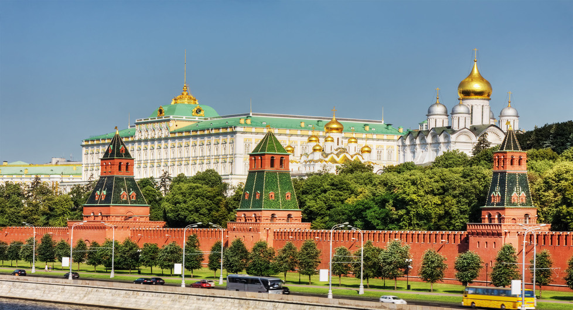
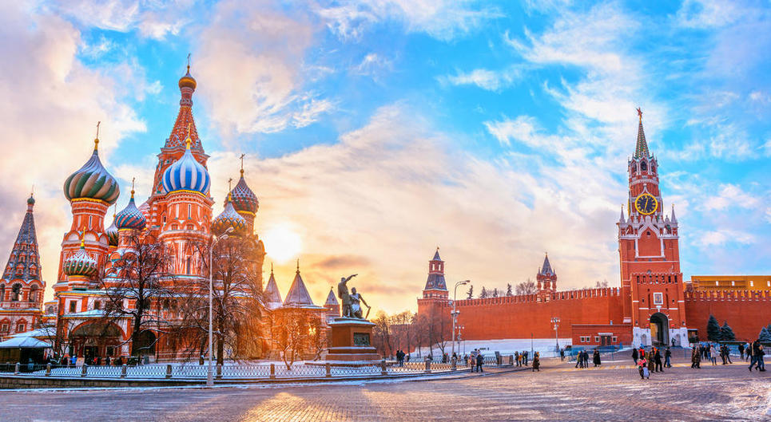
Plaza roja, Moscú
La plaza más famosa de Moscú (y de Rusia) es la Plaza Roja. Situada el pleno centro de la ciudad, tiene 330 metros de longitud y 70 de ancho (23.100 metros cuadrados de superficie). En 1990 el conjunto de la Plaza Roja y el Kremlin fueron declarados Patrimonio de la Humanidad por la Unesco.
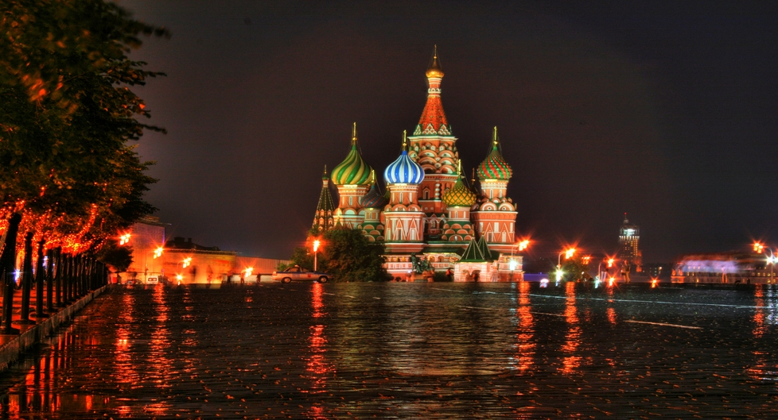
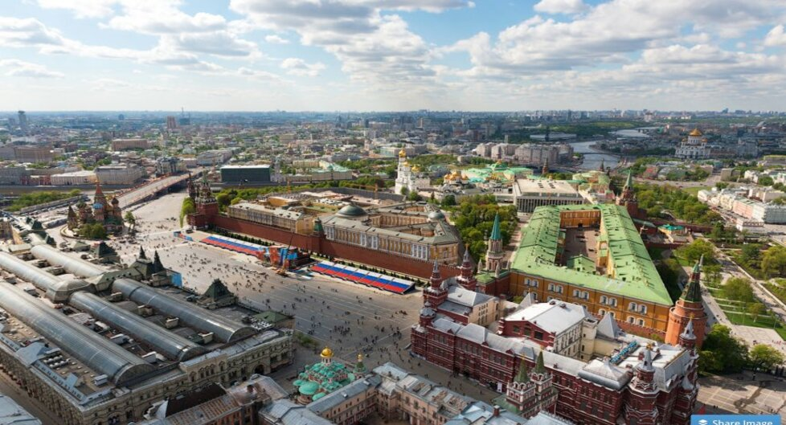
La plaza data de finales del siglo XV, justo después de la construcción de los muros del Kremlin,
se dice que el nombre la plaza no hace referencia al color rojo del comunismo ni al color de los ladrillos que la rodean, sino que deriva de la palabra rusa Krásnaya (Красная), que significa «roja», pero en ruso antiguo significaba «bonita», es decir, plaza bonita.
Durante los últimos años, en la Plaza Roja se han celebrado diversos conciertos de grupos internacionales: Pink Floyd, Scorpions (con un recital con la orquesta presidencial de la Federación Rusa) o Paul McCartney (que incluyó su clásico Back in the USSR).
Cada año, el 9 de mayo, se celebra en la Plaza Roja el aniversario de la Gran Guerra Patria (II Guerra Mundial), con el llamado desfile militar del Día de la Victoria.
Mapa de la Plaza Roja
Los edificios que pueden visitarse en esta plaza son de lo más variados y cada uno tiene un significado especial: el Kremlin (lugar oficial de trabajo del Presidente y que alberga el principal museo de Rusia), el Mausoleo de Lenin (donde se encuentran los restos momificados del líder bolchevique), las catedrales de San Basilio y de Kazán, el Museo Estatal de Historia de Rusia o las Galerías GUM (Galerías comerciales de lujo).
Centro Internacional de Negocios de Moscú
El objetivo del CINM es crear la primera zona en Rusia, y en toda Europa del este, que combinará actividad de negocios, espacios habitables y de entretenimiento. Será una ciudad dentro de la ciudad. El proyecto fue ideado por el gobierno de Moscú en 1992.
La construcción del CINM tiene lugar en el dique de Krasnopresnenskaya. El proyecto entero comprende 1Km². Este terreno es el único punto del centro de Moscú que puede albergar una obra de esta magnitud. Antes la mayoría de edificios que ahí se encontraban eran fábricas y complejos industriales.
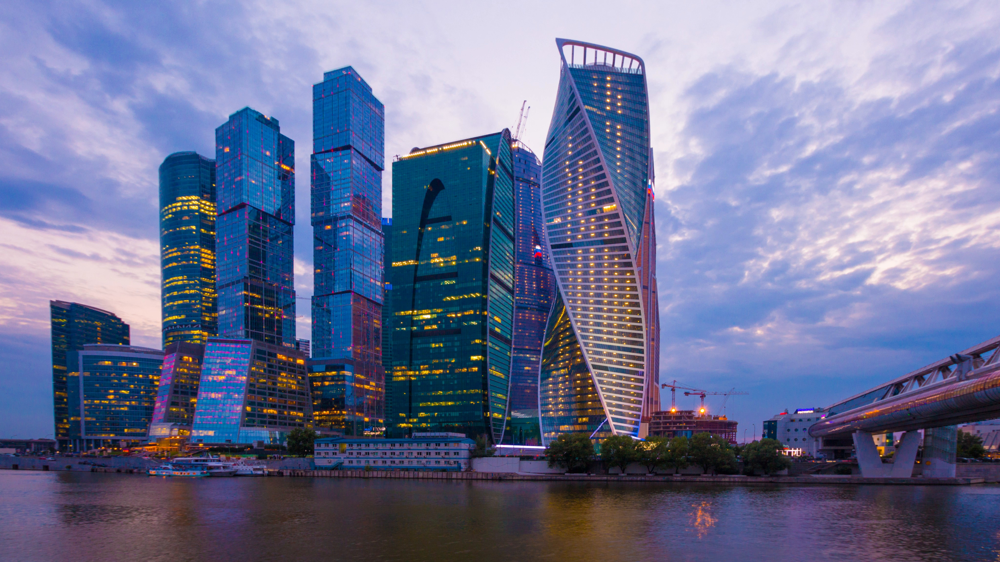
El skyline de Moscú es un abarrotado conjunto de rascacielos vanguardistas. El Centro Internacional de Negocios de Moscú se ha convertido en uno de los lugares destacados para los amantes de la arquitectura. Tres de los rascacielos más altos del continente europeo se encuentran en este espacial Manhattan moscovita. Hay buenas vistas del conjunto desde la conocida Colina del Gorrión. Cerca de la misma, se ubica el Convento Novodévichi y su especial cementerio.
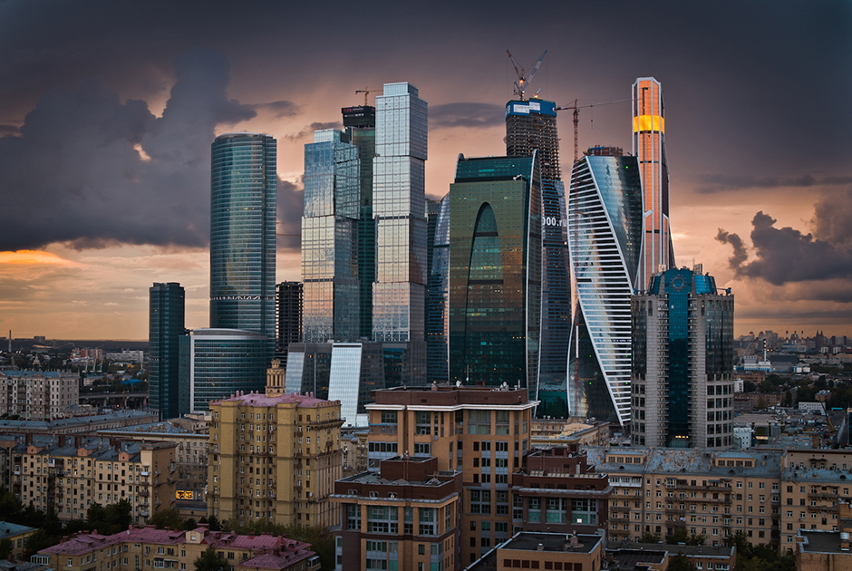
Catedral de Nuestra Señora de Kazán, San Petersburgo
La catedral de Nuestra Señora de Kazán es la principal catedral de la ciudad de San Petersburgo (Rusia) y está consagrada a la Virgen de Kazán, la que es probablemente el icono más venerado de Rusia.
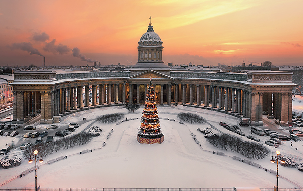
El templo fue construido entre 1801 y 1811 por el arquitecto Andréi Voronijin y es notable, sobre todo, por una gran columnata de 96 columnas. Fue construida en el lugar de la antigua iglesia de piedra para guardar el icono antiguo de Nuestra Seńora de Kazán, a la cual se debe su nombre.
Después de la Revolución Rusa de 1917, la catedral fue cerrada. En 1932, fue abierta de nuevo aunque como "Museo de la Historia de la religión y el ateísmo", en 1992 se consagró de nuevo como catedral ortodoxa y cuatro años más tarde en 1996, la catedral fue devuelta a la Iglesia Ortodoxa Rusa. En el interior de la catedral es donde se encuentra el milagroso icono de la Virgen de Kazán, el cual es un símbolo de la fe rusa. A pesar de esto, existen por toda Rusia y el extranjero varios templos y catedrales con la advocación de Nuestra Señora de Kazán.
Icono Nuestra Señora de Kazam
Lago Baikal
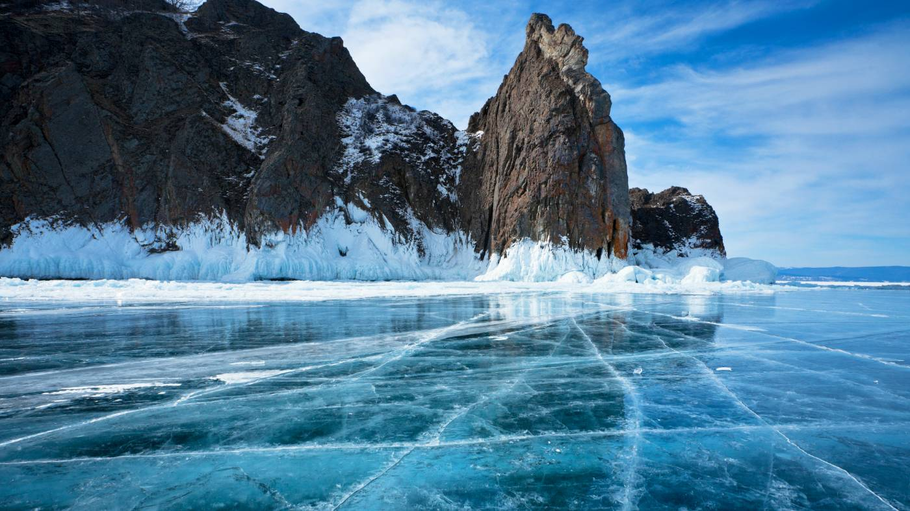
El lago Baikal es un lago antiguo y enorme que se encuentra en la montañosa región rusa de Siberia, al norte de la frontera con Mongolia. Considerado el lago más profundo del mundo, está rodeado de una red de rutas de senderismo llamadas el Gran Sendero del Baikal. El pueblo de Listvianka, en su orilla oeste, es un popular punto de partida para observar la vida silvestre en verano y para patinar sobre hielo y montar en trineo tirado por perros durante el invierno.
Este lago, como he mencionado anteriormente, tiene una gran importancia enfocado desde dos puntos de vista: como un lugar para visitar y hacer turismo o como científicos donde se puede descubrir las características tan únicas que lo hacen tan especial.
La primera característica que lo hace tan importante para la comunidad científica es que un sólo lago como es este alberga el 20% de las reservas de agua dulce de todo el planeta. En el supuesto caso de que sus 336 afluentes dejaran de aportarle agua y alimentarlo, el lago tardaría unos 400 años en vaciarse por el proceso de evaporación. Uno de los cálculos más curiosos realizado por los científicos es que si toda la población mundial se abasteciera de sólo de este lago, podrían vivir durante 40 años y no tendrían problemas de escasez de agua.
La claridad del agua mencionada anteriormente también lo hace especial. La poca turbidez que tiene se debe a que en sus aguas viven unos microorganismos que depuran en al agua y realizan una buena limpieza. Se han realizado algunos estudios para ver si se pueden emplear estos microorganismos para limpiar los derrames de petróleo en otras aguas debido a su alta tasa de depuración.
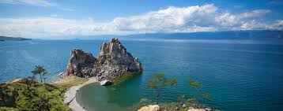
Arenas de Chara
Las aresnas de Chara es un micordesierto que constituye una de las mas bellas paradojas geograficas del planeta; gigantescas dunas de atena contrastando con las heladas montañas de siberia.
justo en medio de las gélidas montañas que vigilan el paisaje siberiano emergen las Arenas de Chara. Se trata de un espectacular microdesierto ubicado a solo cuarenta kilómetros de los Glaciares Kodar. Tiene una superficie de cincuenta kilómetros cuadrados y dunas de hasta treinta metros de altura. Curiosamente, a pesar de lo limitado del terreno que ocupa, dentro de este oasis invertido es posible encontrar diversos
patrones geológicos, desde cadenas de dunas hasta estáticos mares de arena.
Las Arenas de Chara se formaron durante un periodo de glaciación registrado hace aproximadamente 75 mil años, como parte del delta de un lago ubicado frente al Glaciar Sakukan. La erosion del viento durante el holoseno dibujó las dunas y los patrones arenosos.
Este pequeño paraíso se ubica a solo 6 kilómetros de Chara, la capital del distrito. Por esta razón puedes llegar a este lugar ya se por tren o por avión.
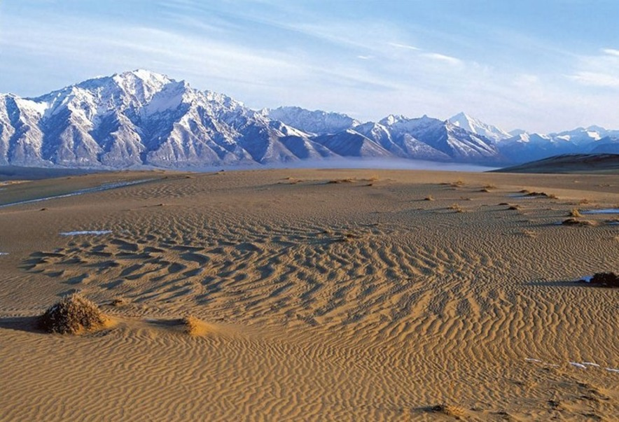
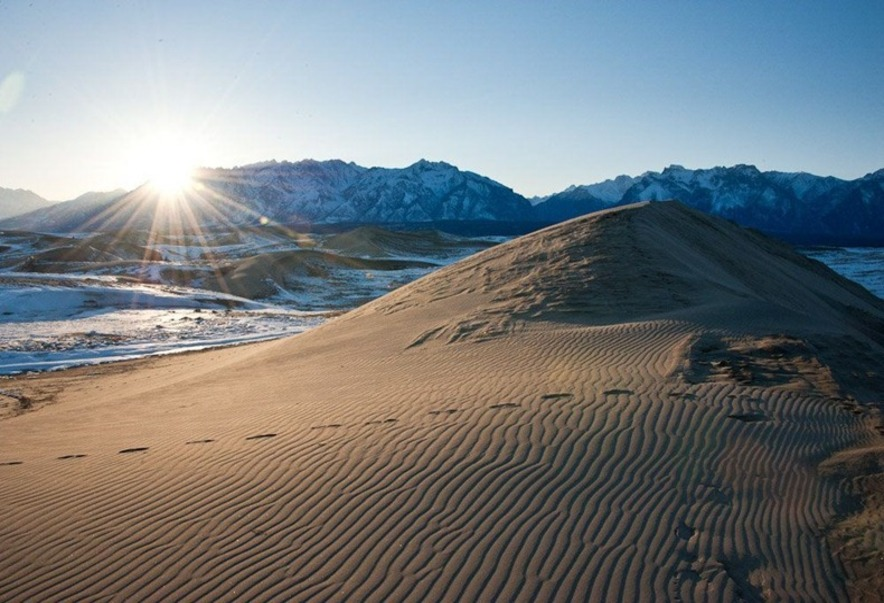
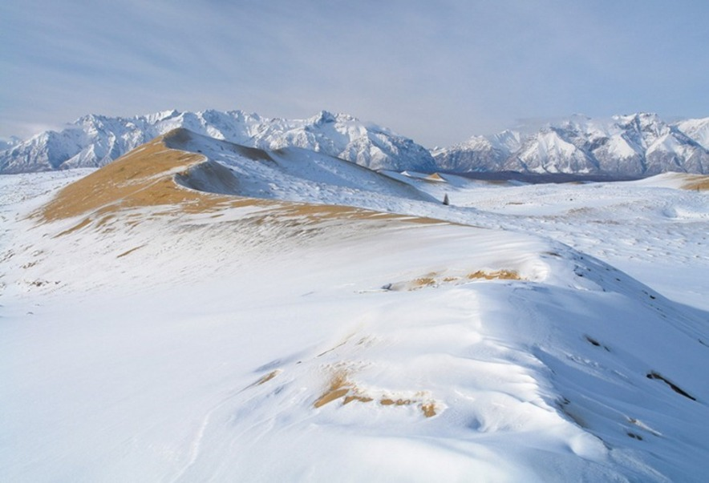
Ploshchad Pobedy, San Petersburgo
Mientras los habitantes y los defensores de Stalingrado morían en batalla, los habitantes de Leningrado tuvieron que soportar una experiencia igualmente terrorífica: un asedio de 872 días a la ciudad, desde el 8 de septiembre de 1941 al 27 de enero de 1944. El 97 % de los que fallecieron no fue a causa de las heridas, ni lucharon en el frente: murieron de hambre y enfermedades.
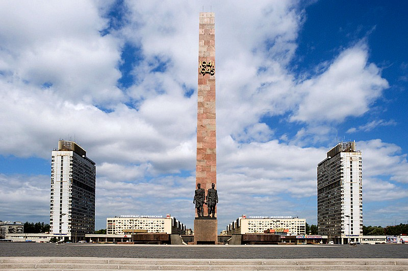
El monumento a los defensores de Leningrado está situado en la plaza de la Victoria de San Petersburgo y constituye el centro de esta composición arquitectónica. Es el más famoso de los memoriales dedicado a las hazañas heroicas de los residentes en la ciudad durante los trágicos días del asedio.
Bajo el monumento se halla un memorial subterráneo, adornado con dos enormes mosaicos llamados “El sitio” y “La victoria”. En la sala se pueden oír señales de radio desde Moscú, mientras que en las pantallas se muestran dos siluetas de la ciudad sitiada.
Malaya Zemlya Memorial, Novorossiysk
El Malaya Zemlya Memorial en Novorossiysk, Rusia, rinde homenaje a una pequeña batalla poco conocida pero de gran importancia de la Segunda Guerra Mundial, que finalmente abrió el camino a la liberación de Novorossiysk de la ocupación alemana. El 4 de febrero de 1.943, una pequeña unidad de marines del Ejército Rojo aterrizó en Malaya Zemlya y defendió esta área durante 225 días, hasta que la ciudad fue liberada el 16 de septiembre de 1.943. La heroica defensa del puerto por los marines permitió a los soviéticos retener la posesión de la bahía de la ciudad, lo que evitó que los alemanes realizasen sus envíos de suministros a través del propio puerto.
El Malaya Zemlya Memorial fue erigido en el año 1.882. Cuenta con un arco triangular que desafía la gravedad y que se eleva hasta 22 metros en su punto más alto, representando la proa de una embarcación llegando a tierra en la playa. Un lado del «arco» cuenta con una escultura de bronce de 10 metros de altura de un grupo de marines desembarcando del buque. Las representaciones del lado opuesto ofrecen el bajorrelieves de la batalla.
En el interior del arco hay distintas placas que ofrecen los nombres de las unidades que participaron en la operación, además de retratos de los héroes. En el ápice de la embarcación se encuentra un nicho que sostiene una cápsula en forma de corazón de oro y que contiene los nombres de los que murieron en la batalla.